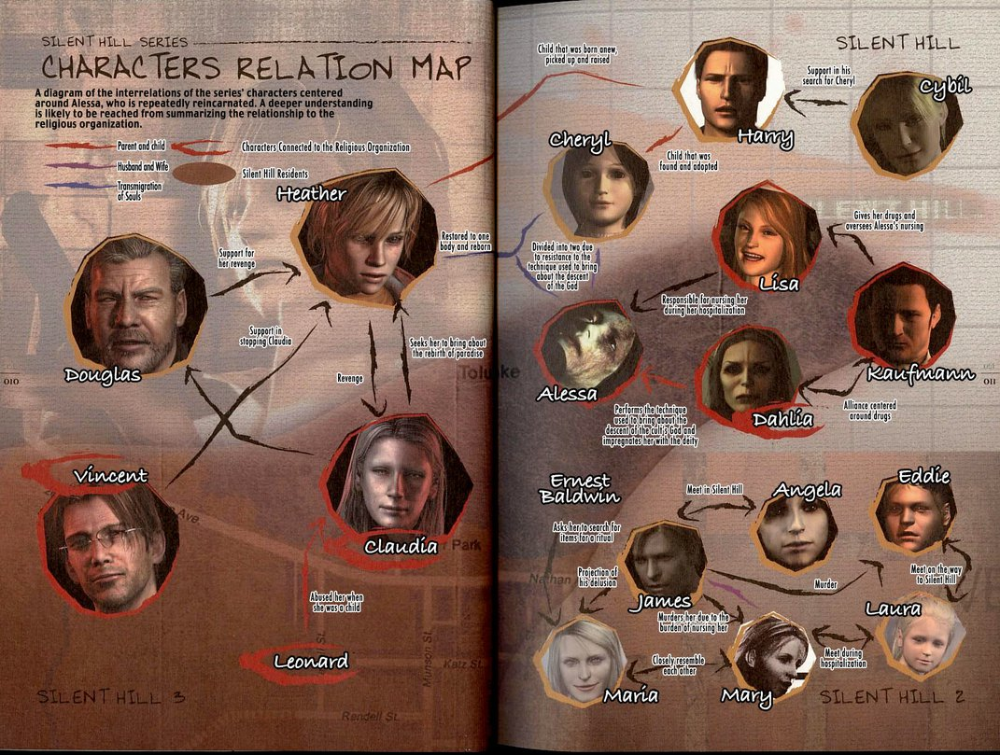
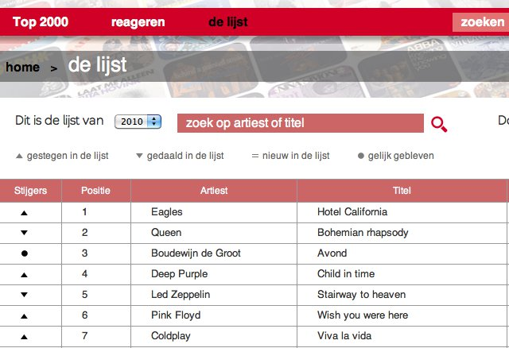

Overview of important terms and concepts.
Rascalopedia gives a quick overview of the most important terms and concepts that are relevant for metaprogrammers in general and metaprogrammers using Rascal in particular.
Rascalopedia is work in progress. Please send us your suggestions for new concepts.
This are the currently covered topics:
1. AbstractDataType
A definition of a data type.
An Abstract Data Type is a mathematical description of a structure
that can be implemented in various ways. For instance, a stack data type can be characterized by empty (the empty stack),
two functions push and pop and axioms that define them. At the implementation level, a stack
can be implemented using a list, array or something else.
In functional languages, and also in Rascal, abstract datatypes (or ADTs for short) are used to define new data types. Well-known examples are stack and tree.
See Algebraic Data Types and Constructors in the Rascal Language Reference.
1.1. Abstract Data Types in Daily Life

1.2. Abstract Data Types in computer science
-
The run-time stack of a programming language interpreter.
-
A search tree.
-
An ontology.
1.3. Abstract Data Types in Rascal
-
A tree data type:
data MyTree = leaf(int n) | tree(str name, MyTree left, MyTree right);
2. Abstract Syntax Tree
Representation of the abstract syntactic structure of a program.
A ParseTree is a detailed and very precise represention of the concrete syntactic structure of a program. It may even be so detailed that it contains every space, comment and parenthesis in the original source text. In many cases a less detailed representation is sufficient and an abstract syntax tree (or AST for short) is used.
For the input sentence

the parse tree (left) and abstract syntax tree (right) may look as follows:
Note that the parse tree on the left did not preserve the spaces in the original text but there are parse tree formats (including the one used by Rascal) that preserve all textual information.
3. Compiler
Tranform source code to an executable form.
A compiler transforms the source code of a program (in a source langue) to an executable form (in a target language) and consists of the following phases:
-
Parser: read the source code and build an Abstract Syntax Tree.
-
Typechecker: perform a semantic analysis of the code, resolve all names and verify that the program is type correct.
-
Optimisation: perform optimisations (e.g., constant folding, dead code elimination, call unfolding). This can be seen as a form of Refactoring.
-
Code generation: generate the final code, this can be asembly language or directly executable code.
4. Domain Specific Language
Programming language targeted for a particular application domain.
-
SQL (querying data bases).
-
HTML (web pages).
-
CSS (presentation of HTML pages).
-
Excel (spreadsheets).
-
BibTex (bibliography).
-
BNF (grammars).
-
Regular expressions (text matching).
5. Dynamic Semantics
Description of the execution behaviour of a program.
Dynamic semantics describes the execution behaviour of a program and includes:
-
Treatment of declarations, names, variables and Scopes.
-
Execution of procedures, statements and expressions.
Contrast with Static Semantics that describes pre-execution behaviour.
6. Grammar
A synonym for Syntax.
7. Interpreter
Directly execute the statements of a program.
There are two methods to execute a program that is written in some source language:
-
An Interpreter directly executes the source statements (but see the variations below).
-
A Compiler translates the source program to some efficient executable form. That executable form is then executed by a hardware processor.
Interpreters exist in many flavours:
-
Direct execution of the source.
-
First parse the source text and build an Abstract Syntax Tree that is then interpreted.
-
As (2), but convert the AST first to an intermediate form that is more suitable for execution. Then interpret that intermediate form.
-
As (2), but compile frequently executed parts of the the AST to executable code.
Clearly, going down this list, the interpreter more and more starts resembling a compiler.
The advantages of interpreters versus compiler are:
-
Interpreter:
-
Pro: simpler than compiler, faster development loop, better debugging facilities, better error messages.
-
Con: slower.
-
-
Compiler:
-
Pro: fast execution.
-
Con: complex, optimizations are error-prone.
-
8. Language
The set of strings defined by a Grammar.
A Grammar or Syntax defines the formation rules for a language. A language is the (possible infinite) set of strings that are defined by a grammar.
-
The language of strings of at most 5
a's: the finite set{"a", "aa", "aaa", "aaaa", "aaaaa"}. -
The language of strings that correspond to even numbers: the infinite set
{"0", "2", "4", "6", …} -
The Java language: the infinite set of syntactically correct Java programs.
9. Language Definition
Description of all aspects of a language.
A language definition defines all relevant aspects of a programming language or Domain Specific Language and includes:
-
A Grammar (including lexical and contect-free syntax).
-
Rules to describe the textual formatting of a language. These rules are sufficient to generate a Prettyprinter for it.
-
Rules that describe the Static Semantics of a language. These rules are sufficient to generate a Typechecker.
-
Rules that describe the Dynamic Semantics of a language. These rules are sufficient to generate an Interpreter for it.
-
Rules how to generate code.
Other aspects of a language definition may include editor behaviour, highlighting, debugging, outlining, auto-completion and more.
10. List
An ordered sequence of values.
A list is a sequence of values with the following properties:
-
The list maybe empty.
-
The values in the list are ordered.
-
The same value may occur more than once.
-
The list has a size that is equal to the number of values in the list.
-
Each element in a list L has an index. The first element has index 0. The last element has index
size(L)-1.
Formally, a list can be defined as follows. Given the domains ELEM (elements) and LIST (lists) and the functions:
nil : -> LIST
cons: ELEM x LIST -> LIST
head: LIST -> ELEM
tail: LIST -> LISTnil and cons are so-called constructor functions that define the values in LIST. They can be paraphrased as:
-
The empty list
nilis an element ofLIST. -
If
eis an element ofELEMandlis an element of LIST, thencons(e, l)is also an element inLIST.
head (take the first element) and tail (take the remainder of a list)
are defined functions characterized by the axioms:
head(cons(e, l)) = e
tail(cons(e, l)) = lThe cases head(nil) and tail(nil) are left undefined (and usually correspond to a runtime error in a programming language).
In Rascal, lists are surrounded by brackets [ and ] and the elements are separated by commas.
Each list has a type of the form list[T], where T is the smallest common type of all list elements.
Read the description of lists and their operators
and of library functions on lists.
10.1. Lists in Daily Life

10.2. Lists in computer science
-
The locations in a computer memory.
-
The list of processes that use most cpu time.
-
The list of procedures that are called by a given procedure.
10.3. Lists in Rascal
-
The empty list:
[]. Its type islist[void]. -
A list of integers:
[3, 1, 4]. Its type islist[int]. -
A list of mixed-type values:
[3, "a", 4]. Its type islist[value].
11. MetaProgramming
Analysis or transformation of one program by another program.
All programs have data as input and produce other data as output. A typical example is a desktop calculator program: after entering some numbers and operators, the program displays an answer. For most programs the data are numeric (calculator, spreadsheet) or textual (text editor, word processor).
A metaprogram is a program that uses programs as data. Writing metaprograms is called metaprogramming.
A metaprogram has to be written in some programming language itself. This is called the metalanguage.
The program that is manipulated by the metaprogram is called the source program (also: object program) and is written in the source language (also: object language).
In some cases the metaprogram transforms the source program into a target program in a target language.
A Refactoring tool for restructuring Java code:
-
Metaprogram: the refactoring tool.
-
Metalanguage: in most cases Java.
-
Source program: the user’s Java program to be refactored.
-
Source language: Java.
-
Target program: the refactored user’s program.
-
Target language: Java.
A Java Compiler:
-
Metaprogram: the Java compiler.
-
Metalanguage: in most cases Java.
-
Source program: the user’s Java program to be compiled.
-
Source language: Java.
-
Target program: the code that is generated by the compiler.
-
Target language: instructions for the JVM (Java Virtual Machine) or machine code, depending on the hardware platform.
A tool to compute Software Metrics of Java programs
-
Metaprogram: the metrics tool.
-
Metalanguage: varies per tool: Java, Rascal.
-
Source program: the user’s Java program for metrics will be computed.
-
Source language Java.
-
Target program: the value of the computed metric.
-
Target language: number.
12. ParseTree
Detailed represention of the concrete syntactic structure of a program.
A parse tree is a detailed and very precise represention of the concrete syntactic structure of a program. It may even be so detailed that it contains every space, comment and parenthesis in the original source text.
A parse tree for the sentence


13. Parser
Check that a text adheres to the rules of a language (and return a ParseTree).
A parser checks that a text in language L indeed adheres to the syntax rules of language L. There are two possible answers:
-
Yes. A ParseTree is returned that shows how the text adheres to the syntax rules.
-
No. Error messages pin point the location where the text deviates from the syntax rules.
This is shown below:
14. Prettyprinter
Transform an Abstract Syntax Tree into a formatted string.
A pretty printer formats the source code of programs. Alternative names are formatter or beautifier. Pretty printers differ in the inputs they accept:
-
The source text itself.
-
A ParseTree that corresponds to the source text. This variant is also called unparser.
-
An Abstract Syntax Tree that corresponds to the source text.
Pretty printers also differ in flexibility. They differ in:
-
The source language(s) they can accept.
-
The adaptability of the formatting rules.
The program fragment
if(x > 10) { System.err.println("x > 10"); } else { System.err.println("x <= 10"); }can be pretty printed in many different ways. Here are two variants examples:
if(x > 10) {
System.err.println("x > 10");
} else {
System.err.println("x <= 10");
}if( x > 10 )
{
System.err.println("x > 10");
} else
{
System.err.println("x <= 10");
}15. Refactoring
Restructuring source code to improve its internal structure without changing its external behaviour.
Refactoring was popularized by Martin Fowler and aims at improving source code quality. The basic philosophy is to identify small, atomic, refactoring steps that improve the internal structure of the code but do not change its external behaviour. The supposed simplicity of these steps must guarantee their correctness.
Atomic steps can be combined to create large and complex refactorings. The major Interactive Development Environements — Eclipse, IntelliJ, Visual Studio — provide interactive support for refactoring.
Some well-known refactorings are:
16. Relation
An unordered set of tuples.
In mathematics, given sets D1, D2, … Dn, a n-ary relation R is characterized by R ⊆ D1 × D2 × … × Dn. In other words, R consists of a set of tuples < V1, …, Vn > where each Vi is an element of the set Di. When n = 2, we call the relation a binary relation.
In database theory, a relation is a table with a heading and an unordered set of tuples:
| D1 Name1 | D2 Name2 | … | Dn Namen |
|---|---|---|---|
V11 |
V12 |
… |
V1n |
V21 |
V22 |
… |
V2n |
V31 |
V32 |
… |
V3n |
… |
… |
… |
In Rascal, a relation is a set of tuples and is characterized by the type:
rel[D1 Name1, D2 Name2, …, Dn Namen]
See Relation Values and for a description of relations and their operators
(since relations are sets all set operators also apply to them, see Set Values)
and functions on relations
(and here again, since relations are sets all set operators also apply to them,
see functions on sets).
16.1. Relations in Daily Life
-
The parent-of or friend-of relation between people.  credit
-
A character relation map, describing the relations between the characters in a play or soap series.
-
A listing of the top 2000 songs of all times including the position, artist name, song title, the year the song was published.  credit
{kind=link}
16.2. Relations in computer science
-
A relational data base.
-
Login information including user name, password, home directory, etc.
16.3. Relations in Rascal
-
A parent child relation:
rel[str parent, str child] = {
<"Paul", "Eva">,
<"Paul", "Thomas">,
<"Jurgen", "Simon">,
<"Jurgen", "David">,
<"Tijs", "Mats">
};
-
A fragment of the top 2000 relation:
rel[int position, str artist, str title, int year] Top2000 = {
<1, "Eagles", "Hotel California",1977>,
<2, "Queen", "Bohemian rhapsody", 1975>,
<3, "Boudewijn de Groot", "Avond", 1997>,
...
};
17. Scope
The visibility and accessibility of names in a program.
18. Set
An unordered collection of values without duplicates.
A set is a collection of values with the following properties:
-
The set maybe empty.
-
The values in the list are unordered.
-
A value can only occur once.
-
The set has a size that is equal to the number of values in the set.
In Rascal, sets are surrounded by braces { and } and the elements are separated by commas.
Each set has a type of the form set[T], where T is the smallest common type of all set elements.
Read the description of sets and their operators
and of library functions on sets.
18.1. Sets in Daily Life
18.2. Sets in computer science
-
The files in a directory. Of course, when you order them (by name, modification date) you need a List to represent them.
-
The set of moves an opponent can play in a game.
-
The set of nodes in a network.
18.3. Sets in Rascal
-
The empty set:
{}. Its type isset[void]. -
A set of integers:
{3, 1, 4}. Its type isset[int]. -
A set of mixed-type values:
{3, "a", 4}. Its type isset[value].
19. Software Engineering
Discpline of design, building and maintaining software.
Software engineering is the discipline that encompasses all aspects of creating software and encompasses:
-
Requirements engineering: determine what the future owners and users of a software system expect.
-
Software Design: design the global architecture as well as as the technical details.
-
Software Construction: build software according to its specification.
-
Software Testing: test that software works according to its specifications.
-
Software Deployment: distribute software to its users.
-
Software Maintenance: maintain software after it has been deployed.
There are various models to organize the above activities. The classical waterfall model organizes them sequentially. Variations are more iterative and allow to go back to earlier phases. Waterfall-based methods follow solid engineering practices but may lead to much bureacracy and an inflexible process that cannot easily cope with changing requirements.
Other approaches promote agile development and are characterized by very short iterations that include all the above activities. Agile methods aim to produce prototypes as early as possible and this makes it easier for future users to assess the prototype and suggest changes.
20. Software Evolution
Understanding and managing the continuous change of software.
Meir M. Lehman was one of the first scientist to observe that software evolves over its lifetime. He formulated several laws about software evolution. Here are three examples of his laws (slightly paraphrased):
-
Continuing Change: Programs must be continually adapted or they become progressively less usefull.
-
Increasing Complexity: When a program evolves, its complexity increases unless work is done to maintain or reduce it.
-
Continuing Growth: The functional content of programs must be continually increased to maintain user satisfaction over their lifetime.
Software evolution is a specialisation in Software Engineering that address the following:
-
Understanding the reasons for software evolution.
-
Understanding the impact of software evolution on the structure and quality of source code.
-
Developing Software Metrics and tools to measure the impact of software evolution.
-
Developing methods and tools for the better understanding of source code.
-
Developing Refactoring tools to counter the effects of software evolution.
21. Software Metric
A metric to measure a source code property.
A software metric is a quantitative measure about source code. A combination of one or more metrics can be used to quantitatively characterize aspects of software quality. Various quality aspects are of interest such as size, reliability, maintainability and so on.
Examples of software metrics are:
-
Source lines of code (SLOC) measures the size of software. The larger the size, the more is needed to build and maintain it.
-
Cyclomatic complexity measures logical complexity of code. Software components with a high cyclomatic complexity are hard to understand and maintain.
-
Coupling measures the coupling between software components. High coupling indicates problems in the structure of a system.
22. Static Semantics
Description of the properties of a program that can be determined/checked before it is executed.
The static semantics of a program describe all properties that can be determined before the program is executed. A Typechecker is a tool that checks the properties of a program as described by its static semantics.
Static semantics describes properties that are relevant before a program is executed and differs from Dynamic Semantics that describes the execution behaviour itself.
Examples of static semantic properties include:
-
The proper use of types.
-
The proper use of names.
Language with substantial static semantics: Java, Haskell, Rascal. Languages with only dynamic semantics: Python, Ruby.
23. Syntax
The rules that describe correctly structured programs in a language.
According to the Merriam-Webster dictionary syntax means
-
the way in which linguistic elements (as words) are put together to form constituents (as phrases or clauses);
-
the part of grammar dealing with this.
Dictionary.com is more elaborate and defines syntax as:
-
Linguistics:
-
a. the study of the rules for the formation of grammatical sentences in a language.
-
b. the study of the patterns of formation of sentences and phrases from words.
-
c. the rules or patterns so studied: English syntax.
-
d. a presentation of these: a syntax of English.
-
e. an instance of these: the syntax of a sentence.
-
-
Computers: the grammatical rules and structural patterns governing the ordered use of appropriate words and symbols for issuing commands, writing code, etc., in a particular software application or programming language.
Wikipedia says: the syntax of a programming language is the set of rules that define the combinations of symbols that are considered to be correctly structured programs in that language.
In linguistics, a Grammar is a concept that includes syntax. However, in the cases that are relevant for meta-programming they can be used interchangeably. We will use them as synonyms.
In programming languages a further subdivision can be made:
-
Lexical syntax defines the form of the lowest level textual items such as keywords, numeric constants, and string constants.
-
Context-free syntax defines the global structure of statements, procedures and modules.
A Parser checks that a text in language L indeed adheres to the syntax rules of language L. There are two possible answers:
-
Yes. A ParseTree is returned that shows how the text adheres to the syntax rules.
-
No. Error messages pin point the location where the text deviates from the syntax rules.
24. Testing
Determine that the quality and functionality of software.
Software testing is the process to determine that a software system meets its specifications and works as expected. This is done by manually or automatically executing test cases and observe the result.
25. Tuple
An ordered, fixed length, sequence of values of possibly different type.
A tuple is an ordered fixed length sequence of values of possibly different type.
In Rascal a tuple is written as < V1, …, Vn > and a tuple type has the form type[T1, …, Tn],
Ti represents the type of element i. Tuple have two major applications:
-
As tuples in a Relation.
-
For ad-hoc packaging of values, for instance, to return multiple-values from a function.
See Tuple Values for the operations on tuples.
26. Typechecker
Checks the type rules for a source language.
A type system is a set of rules that defines how values, variables and functions may be used in a given programming languages.
A type checker, checks that these rules are enforced. The moment that type checking can be done differs per type system, but two extremes exist:
-
Static type checking: all checking is done before the program is executed.
-
Dynamic type checking: all checking is done during execution of the program.
-
Hybrid type checking: when possible checks are done before execution, the remaining checks are done during execution.
These different styles of type checking have different trade offs:
-
Static typechecking:
-
Pro: most errors are found before execution.
-
Con: more type declarations have to be written by the programmer and in some situations the type systems limits what can be expressed.
-
-
Dynamic checking:
-
Pro: most flexible and expressive.
-
Con: errors can only be found during execution.
-
-
Hybrid (or gradual) type checking:
-
Pro: a reasonable compromise.
-
Con not be as safe as full static typechecking.
-
-
If in Java a variable has been declared as
boolit cannot be added to an integer. -
If in Java a method has three formal parameters, it cannot be called with four actual parameters.
-
In Python, a variable can first get a string value assigned and later on an integer value.
27. Visualization
Visual presentation of scientific or abstract data.
Visualization is the activity of presenting scientific data or abstract structures in a visual form. There are several subareas:
-
Scientific visualization: deals with data that are geometric in nature and may have a time dimension.
-
Information visualization(: deals with abstract data structures like trees, graphs and relations.
-
Software Visualization: deals with facts related to software.
The Visualization Library library provides a framework for interactive visualization. Simple examples can be found in visualization recipes.
27.1. Scientific visualization
Robert vam Liere and Wim de Leeuw have visualized liquid flows. There is also an animated version.
27.3. Software Visualization
Stephen Eick visualizes the frequency of execution for each line in all source files of a software system.
Daniel Bierwirth shows the connections (colored lines) between system components (at outer circle).